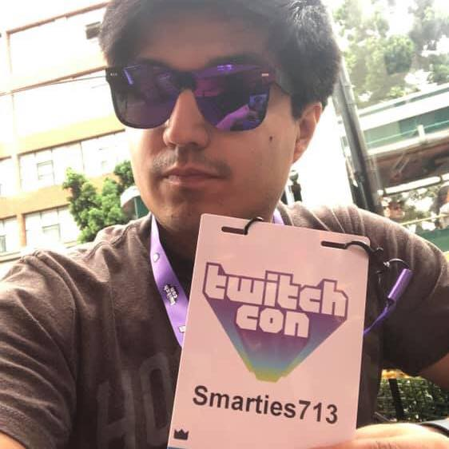

 Hey there! Welcome to my webpage! I'm Martin. Sometimes called Marty. I never thought that I would be able to attend as prestigeious of a school as NU but here I am! I livestream videogames on Twitch.tv, and I hope to compete next year in San Diego during Twitch Rivals Apex Legends tournament event.
I have been building computers since 2014. I have always loved the hardware aspect of computers. Being able to take the parts of something and assemble them and have something post for the first time is like $1000 high stake Legos. I know about cudacores, processing cores, and hyper threading. But I didn't know anything about programming.
I am now taking a programming bootcamp at Northwestern